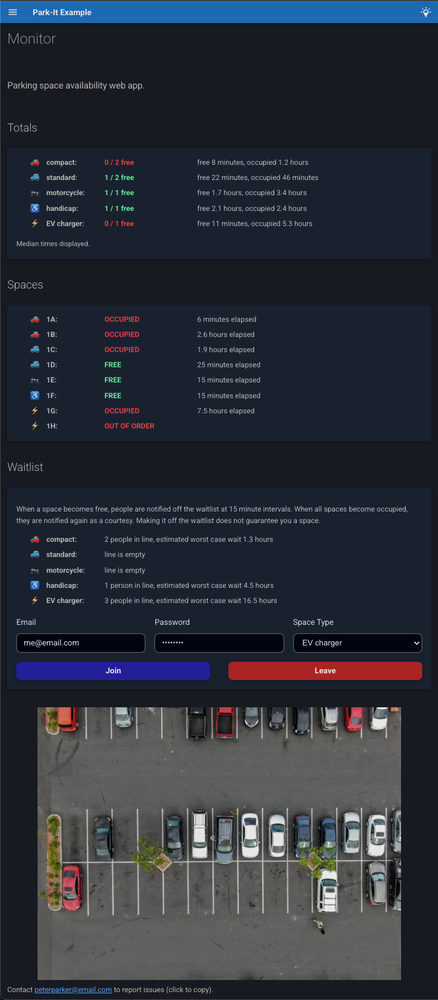

park-it!


A framework for rapidly building parking space monitor web apps. Built on Mkdocs-Material, implemented as a Mkdocs plugin. Designed for use with parked car sensors, it will work with any web-connected system that can fire a json payload at your endpoint.
Features
- Space status updates are pushed to the browser in real time without requiring page reload using SSE.
- Provides an optional email waitlist for notifying users when spaces become free. Users don't need to make accounts, they join simply by inputting an email and shared password. Once a space opens up, every N minutes, the next person in line receives an email. The email functionality works for free and relies on use of a dedicated Google account.
- Allows for separately monitoring and waitlisting different types of parking spaces. Currently supports the following types: EV charger, handicap, compact, standard, motorcycle, and truck.
- Provides the option to store space usage duration history (both occupied and free durations). When this is enabled, the UI shows median usage times for different space types, and estimates the worst case wait times for the waitlist. TODO compute other statistics.
- Persistent state for the parking spaces, waitlist and usage duration history is accomplished using minimal sqlite databases.
- App configuration is ergonomically defined in an
app-config.yamlfile. - Website looks good on both mobile and desktop.
- As a Mkdocs plugin, it makes use of Mkdocs-Material for the frontend build, and so
you can easily add static pages as markdown files and customize site aesthetics with
tools from the Mkdocs ecosystem in
mkdocs.yml. The default config includes a light/dark mode toggle that respects user system settings by default.

Motivation / LoRa Digression
The motivating use case for this framework was monitoring EV charger availability in my apartment complex. I was tired of having to drive all the way to the top of the parking structure to check if the vintage (non-app-enabled) EV chargers there were available.
I ended up getting a little carried away and discovering the awesome LoRa transmission technology: it is designed for IoT devices that don't need to transmit a lot of data, works in the unlicencsed radio band around 900 MHz in the US, and sports extremely low power consumption and a range of up to 3 miles in urban areas. Check it out, it's rad, and a perfect fit for parked car sensors in a lot or garage.
The organization The Things Network provides an open source implementation of the internet connectivity portion for LoRa (the LoRaWAN protocol), and have made their service free for hobbyist use, with a global network of public LoRa gateways available. This makes it very straightforward to connect your devices if a gateway is in range. The system I built this framework for uses this LoRa-based car sensor and The Things Network LoRaWAN stack with integrated webhook functionality. The batteries in those Nwave sensors are supposed to last 10 years!
Anyway, I am very excited about this technology, and I hope this project serves as an inspiring, or at least titillating, example of a bootleg infrastructure solution it enables.
Basic Setup
The steps to build a parking monitor system website for your organization/community:
-
Determine a suitable parked car sensor and update payload delivery system for your needs. I heartily recommend the Nwave sensor linked above and The Things Network if LoRa connectivity is feasible for you.
-
If you want to enable the email waitlist, make a dedicated Google account for your organization, and set up an installed app client secret for sending emails from that Gmail account. See here for details.
-
Install the park-it package in your python environment with
pip install "park-it[site-build]"oruv add "park-it[site-build]".- Note: The
site-buildextra bundlesmkdocs-material, which is required for the site frontend build but not used at runtime. If you're space-conscious at runtime, you can safely remove and reinstall without the extra after building.
- Note: The
-
To see a non-functional example of the site frontend build template on
localhost:8000, runpark-it serve-example. -
If you like what you see, run
park-it initto copy the necessary structure directly from the package'sexampledirectory into your current working directory. If you have a.gitignorefile already in your directory, the recommended default ignores will be appended. Now you'll have the following files: -
Modify the config file
app-config.yamlto suit your application. Example:# FastAPI app title, and displayed site title title: Park-It Example # FastAPI app description, and displayed site subtitle description: Parking space availability web app. # App version version: 0.1.0 # App email address that users receive waitlist email notifications from app_email: app@email.com # Optional name attached to app_email for the email payload app_email_name: Peter Parker # Hosted URL, for adding a link in email notifications app_url: http://localhost:8000 # Optionally, add a separate contact email address that users can badger about any issues with # the system. It will be listed at the bottom of the webpage and in email notifications. contact_email: peterparker@email.com # The id, user-friendly label and type for each individual parking space, with spaces # listed in desired display order. spaces: - sensor_id: dev1 label: "1A" type: compact - sensor_id: dev2 label: "1B" type: compact - sensor_id: dev3 label: "1C" type: standard - sensor_id: dev4 label: "1D" type: standard - sensor_id: dev5 label: "1E" type: motorcycle - sensor_id: dev6 label: "1F" type: handicap - sensor_id: dev7 label: "1G" type: EV charger - sensor_id: dev8 label: "1H" type: EV charger out_of_order: true # an out-of-order space will ignore update messages # Whether to show the "Spaces" section of the page with individual space occupancy and durations. show_individual_spaces: True # Whether to store occupied and free durations for computing median duration and wait-time estimates. store_usage_durations: True # The number of most recent duration values to compute medians over. usage_median_num: 100 # Whether to activate the email waitlist functionality, and show the waitlist form on # the page. waitlist: True # Number of minutes to wait after a space becomes free before sending the first waitlist email # notification, to guard against noise from someone just adjusting their position. waitlist_free_debounce_minutes: 1 # Number of minutes between sending each next waitlist notification while spaces are free. waitlist_interval_minutes: 15 # Optionally, specify a descriptive image of the parking lot to display on the # webpage. Must be a path relative to project root. image: path: aerial-view-of-a-parking-lot-in-austin-in-need-of-repair.jpg caption: from https://lonestarpavingtx.com/common-reasons-to-consider-parking-lot-repair-in-austin/ pixel_width: 800 -
Create a subclass of
SpaceUpdateBaseModelmatching your specific car sensor update payload shape. See here for instructions on how to autogenerate this. -
If you want to enable the email waitlist, assign a shared password that your users must enter using either a text file or the environment variable
PARK_IT_WAITLIST_PASSWORD. -
Modify the default Mkdocs config file
mkdocs.ymlto suit your fancy. Also if you want additional static pages added to your site, you can add them as markdown files underdocsin standard Mkdocs fashion.mkdocs.ymlmust include the following fields: -
Build the site frontend with
mkdocs build. By default, it will build to the directorysite. If you're using the defaultmkdocs.ymlfile, you can select an alternate build directory by setting the environment variablePARK_IT_SITE_DIR. -
Write a simple main script to build the dynamic web app from the Mkdocs build and run it. You must run the app using
uvicorn. Example:""" Example Park-It server program. - `DummySpaceUpdate` is a placeholder space update model class that will work with `tests/mock_updater_client.py` for testing purposes. You must create a model for your sensor's update payload. - python-dotenv package with a .env file is convenient for setting the environment variable `PARK_IT_WAITLIST_PASSWORD` for development, but passing a text file path to waitlist_password_path is more secure for production. - if PROJECT ROOT is your current working dir, the commented out Path args are the defaults (not including waitlist_password_path). """ from pathlib import Path import uvicorn from park_it.app.build_app import build_app from park_it.models.space_update import DummySpaceUpdate # from dotenv import load_dotenv # load_dotenv() PROJECT_ROOT = Path(__file__).parent if __name__ == "__main__": app = build_app( space_update_model=DummySpaceUpdate, # app_config=PROJECT_ROOT / "app-config.yaml", # sqlite_dir=PROJECT_ROOT / "sqlite-dbs", # site_dir=PROJECT_ROOT / "site", # google_token_path=PROJECT_ROOT / "auth-token.json", # waitlist_password_path="waitlist-pw.txt" ) uvicorn.run(app, host="127.0.0.1", port=8000) -
Host the app somewhere accessible to your community, and disseminate the shared waitlist password through communication channels.